Chapter 12 — Three A.M.
The brick went off at 3:04 a.m. with the sound of a smoke detector being murdered.
Maya was awake before she understood why, phone in hand, reading the page in the blue dark of her kitchen: SYNTHETIC CHECK: glasshouse.io p95 > 8s (threshold 2s). Below it, forwarded by the overnight support rota, a screenshot of a researcher's post: is @glasshouse down or just thinking about it.
She opened three terminals at the kitchen table and started looking for the system.
kubectl get pods said everything was Running and Ready — eight Atrium pods, green across the board, lying by omission. The logs were a firehose: eight pods' worth of interleaved lines, no request IDs, no way to tell which line belonged to which user's eight-second page load. She pulled a thread dump through kubectl exec and jcmd and found a couple of dozen threads waiting on socket reads toward Postgres — suspicious, except she had no idea what normal looked like at 3 a.m., because nothing recorded it. Was the connection pool exhausted? There was no gauge to ask. Was latency bad everywhere or only on the dashboard? There were no percentiles. There were no dashboards at all.
At Meridian I'd have pulled up the metrics page I hand-rolled myself — crude, but I knew what normal looked like on it, she thought. Here I have kubectl, a thread dump, and vibes.
The Canary sat on the table. House rules were house rules, even alone, even at 3:40 a.m. She explained the symptoms to it out loud, in full, calm sentences: site slow, pods healthy, logs uncorrelated, threads waiting on the database, no evidence for or against anything. The Canary, dented and yellow, declined to escalate.
At 4:40 the synthetic checker went green. No deploy, no restart, no action taken. Maya watched it stay green for forty minutes, then typed the worst sentence an engineer can put in an incident channel: resolved — cause unknown.
She did not go back to sleep.
The investigation
The postmortem was at ten. Elias let her walk the timeline — page, terminals, dump, recovery — without interrupting once. Then he asked his only question.
"What did you know, and when did you know it?"
"Nothing," Maya said. "And too late."
He nodded slowly, like she'd passed a test she'd rather have failed. "Then the incident isn't the finding. Write that down as finding number one: the system recovered and we cannot say why. Everything else is decoration."
Idris had brought a prop. He read it aloud: backlog ticket ATR-1207, "Real application metrics," filed the afternoon of the promo-day meltdown — the day two hundred parked threads took the site down while CPU idled and the only evidence was a thread dump. He read the subtitle too, slower — that postmortem's most brutal line, true again overnight: "— we graphed the LB because we had nothing else." "Five months old," he said. "For the record: I have been making this joke since April, and it has stopped being funny."
"Then let's stop promising 'monitoring,'" Elias said. "Monitoring is a stack — what you install after you've failed to design. Observability is a property: for every user-facing flow, what will 3 a.m. ask, and is the answer already being recorded? Last night the question was slow everywhere, or slow somewhere, and the answer was recorded nowhere."
"And the contract that makes it negotiable," Maya said, the shape arriving as she spoke, "is an SLO per flow, not per server: 99.9 percent of submissions complete inside two seconds, over thirty days. A sentence Lena can hand Northbeam — and an error budget for us: forty-three minutes a month. While it's healthy we ship features; when it burns, reliability jumps the queue, because a number we all signed says so."
Lena wrote the figures down without being asked. "I have spent two years arguing about reliability in adjectives. Give me arithmetic and I'll sign it." She did — submission, triage, payouts, one objective each. Her business case still fit in one line: "Northbeam's security team asked me, in writing, how would you know if this happened during business hours? I need an answer that isn't 'Twitter.'"
Three days later the cloud provider's graphs supplied the cause they couldn't see: a storage latency spike on one Postgres node, 03:01 to 04:38, overlaying the checker's red window almost perfectly. Everything waiting on that node had been slow. The storage healed, and Glasshouse healed with it. Recovery without understanding — the worst kind there is.
The roadmap moved. Observability stopped being a backlog ticket and became the sprint.
The cluster kills the truth-tellers
Three weeks into the buildout, the universe supplied a second lesson, free of charge.
The team had restored the database HealthIndicator — the one that had famously vanished under the prod profile back in March, when a dependency bump moved a class and @ConditionalOnClass backed off without a sound — and it dutifully reported DOWN whenever Postgres misbehaved. Somewhere in the enthusiasm, a well-meaning commit wired the full health endpoint into the Kubernetes liveness probe:
# deployment.yaml — the well-meaning commit
livenessProbe:
httpGet:
path: /actuator/health # the aggregate — includes the database indicator
port: 8080
periodSeconds: 10
failureThreshold: 3 # three misses × 10s → the kubelet kills the pod
⏸ Your call. The indicator is honest and the YAML is idiomatic — so walk it forward: what happens to eight healthy pods the next time Postgres stumbles for ninety seconds, and which -ility is about to be destroyed by its own safety machinery?
At 12:51 on a Tuesday, Postgres had a ninety-second blip — a failover hiccup, self-healing, the kind of thing a mature system shrugs off. Every Atrium pod truthfully reported DOWN. Thirty seconds later the kubelets, following orders, executed all eight of them.
The blip had passed before the first replacement pod finished starting. But now eight cold JVMs were warming at once, and eight Hikari pools were refilling against a database still recovering. New pods answered their first health checks slowly. Some were killed again, mid-warmup, because no startup probe shielded them. A ninety-second database hiccup became a twenty-two-minute restart storm. The health checks weren't reporting the outage anymore. They were the outage.
Idris watched pods cycle on the war-room screen and delivered the line that would end up in the handbook: "The cluster is killing pods for telling the truth."
(If you ran the ledger at the pause: Postgres spent ninety seconds of availability; the probe wiring spent twenty-two minutes. That gap is an operability failure — machinery making decisions nobody had designed.)
What the senior sees
Back in March, reviewing the restored indicator, Idris had asked where Kubernetes should point at it — liveness, readiness, we should fight about that properly someday — and nobody had picked the fight up. It was September now, and the invoice ran to twenty-two minutes.
Idris took a whiteboard marker and wrote two questions, far apart.
"Liveness asks: should I be restarted? The only honest reasons to say yes are about me — I'm deadlocked, I'm wedged, my state is unrecoverable. Things a restart fixes." He tapped the second question. "Readiness asks: should traffic be routed to me? That's where dependencies live. If the database is down, the correct move is to stop sending me requests and wait — not to shoot me. Restarting a pod has never once fixed a remote database. It just adds a stampede of cold starts to the recovery."
"So liveness must never include a dependency," Maya said. "Because the kubelet's only remedy is the one remedy that can't help."
"And makes it worse," Idris said. "Failure handling that amplifies the failure."
He drew the doctrine between his two questions, the well-meaning commit's wiring dashed across it like a crime-scene outline:

The fight, six months deferred, lasted about four minutes. Probe doctrine is only debatable before you've watched a kubelet execute eight pods for honesty. The drawing stayed on the Wall, beside the Request Journey — the team's socket-to-DB map of a single request.
Elias, from the doorway: "Show me the mechanism on Boot's side."
Maya had read it the night before. "Boot has modeled this since 2.3 — the application publishes its own LivenessState and ReadinessState, and Actuator exposes them as health groups: /actuator/health/liveness and /actuator/health/readiness. Each group is configurable, so you decide which indicators feed which probe: liveness gets the process's own state and nothing else; readiness is where our database indicator belongs. Our mistake wasn't the indicator — it was pointing the wrong probe at the aggregate."
That was the trap in my hand-wired instinct, she realized. At Meridian the health check was a servlet I typed myself — I chose every probe it ran because I'd written every line of it. Here the indicator was auto-discovered into an aggregate I'd never read — convenience, billing me later.
The same Wall session covered what Actuator actually was: not one endpoint but a family — /health, /info, /metrics, /env, /beans. Each is an @Endpoint bean, and almost all of them are unexposed over HTTP by default, opted in through management.endpoints.web.exposure.include. The default is deliberate: /env reveals your entire configuration surface — values masked by default in current Boot, but the keys alone tell an attacker exactly what to probe for — and /heapdump serves the contents of memory. On a security platform, an exposed actuator wasn't an oversight. It was a Stonethrow submission waiting for Sable's byline — Glasshouse's bounty program pointed at itself, and the researcher it had already paid once for one leaky error page.
Then Micrometer. "It's a facade," Maya explained at the Wall, Priya taking notes. "You record against a MeterRegistry; the registry implementation decides the backend. Three meter types do ninety percent of the work: a counter only goes up — events, like reports submitted. A timer records durations and counts, and can publish percentile histograms — that's where p99 comes from. A gauge samples a value that goes up and down — active connections in the Hikari pool. Prometheus pulls: it scrapes /actuator/prometheus on the interval its own server config sets — every fifteen seconds in Glasshouse's deployment, though Prometheus ships defaulting to one minute — and stores the time series. We don't push anything; we hold the meters in memory and answer the door."
The fix
The configuration came first — a policy, not a snippet, argued in review and recorded in an ADR:
management:
server:
port: 8081 # management on its own port; the ingress never
endpoints: # routes it — cluster-internal only
web:
exposure:
include: health, info, prometheus # /env, /beans, /heapdump stay dark
endpoint:
health:
show-details: when-authorized
probes:
enabled: true # /actuator/health/liveness + /readiness
group:
readiness:
include: readinessState, db # dependencies live HERE, not in liveness
server:
shutdown: graceful # Boot's default since 3.4 — pinned explicitly anyway
spring:
lifecycle:
timeout-per-shutdown-phase: 20s
The deployment's liveness probe moved to /actuator/health/liveness on the management port — process-only, dependency-free. Readiness got /actuator/health/readiness, database indicator included. A Postgres blip now meant pods quietly stepped out of rotation, then back in when the storm passed. The database indicator completed its strange little arc: vanished in March, restored, mis-wired into the wrong probe, and finally — correctly placed.
The indicator itself was the sprint's smallest artifact — a dozen lines against the read replica, returning the one number Maya had wanted at her kitchen table:
@Component("dbHealthIndicator") // claims the "db" slot in the readiness group
class ReplicaHealthIndicator implements HealthIndicator {
private final JdbcTemplate jdbc;
ReplicaHealthIndicator(JdbcTemplate jdbc) { this.jdbc = jdbc; }
public Health health() {
try { // one cheap row — probes fire constantly, so this must cost ~nothing
Long lag = jdbc.queryForObject(
"SELECT extract(epoch FROM now() - pg_last_xact_replay_timestamp())", Long.class);
return Health.up().withDetail("replicaLagSeconds", lag);
} catch (Exception e) {
return Health.down(e); // readiness DOWN → out of rotation, not executed
}
}
}
Graceful shutdown was verified rather than assumed — it's Boot's default these days, which is exactly why nobody had ever watched it work. Idris drew the failure mode: Kubernetes sends SIGTERM and removes the pod from the Service's endpoints concurrently. The removal can lose the race, steering fresh requests at a pod already shutting down. A five-second preStop sleep let the routing layer catch up. Graceful shutdown let in-flight requests finish, up to the timeout. They killed a pod under load and watched zero requests fail. Then they did it again, because the first time felt like luck.
Metrics came next, with a rule: business metrics ship alongside system metrics, because "the site is slow" is a symptom but "triage latency tripled" is a finding:
@Component
public class TriageMetrics {
private final Counter reportsSubmitted;
private final Timer triageLatency;
public TriageMetrics(MeterRegistry registry) {
this.reportsSubmitted = Counter.builder("glasshouse.reports.submitted")
.tag("channel", "api")
.register(registry);
this.triageLatency = Timer.builder("glasshouse.triage.latency")
.description("submission to triage decision")
.publishPercentileHistogram()
.register(registry);
}
public void reportSubmitted() { reportsSubmitted.increment(); }
public void triaged(Duration timeToDecision) { triageLatency.record(timeToDecision); }
}
Each signed flow got one board: the golden signals — latency, traffic, errors, saturation — beside the business meters that priced them; an SLO you can't watch burning is a contract you can't keep.
In a week the Grafana boards became the thing Maya had ached for at her kitchen table: request latency percentiles per endpoint, JVM memory, and — five months after the ticket was filed — the Hikari gauges, active, idle, and pending. Beside them sat the Postgres lock-wait panel Idris had demanded the day @Version shipped (optimistic locking — stale writers get a conflict exception instead of holding row locks). "Next time someone proposes SELECT FOR UPDATE," he said, "I will be watching." He delivered it mildly, over the battered enamel lunch tin he brought from home every day — Tuesdays were jollof, his mother's recipe, not up for discussion.
Priya's own enthusiasm produced the chapter's last bug. Her dashboard PR included a refinement:
Counter.builder("glasshouse.reports.submitted")
.tag("researcher", report.researcherId()) // one time series PER RESEARCHER
.register(registry)
.increment();
Maya caught it in review with the new checklist; staging supplied the proof. Every distinct researcher ID created a new time series, held in the app's registry and scraped forever. Thousands of researchers meant thousands of series, and Prometheus memory climbed a staircase as they accumulated. "Metrics are aggregates," Maya wrote in the review. "The moment one can identify a user, you've built a worse database. IDs go in logs and traces; tags are for low-cardinality categories — status, severity, endpoint." The team rule went on the Wall in block letters: no user-id tags — Prometheus is not a database. Priya fixed it in an hour, then added the rule to the checklist herself. The teaching loop, Maya noticed, was now running without her pushing it.
Elias's only addition to the review thread was a cost model, green even in plain text: Cardinality is multiplication, not addition — a metric's series count is the product of its tag dimensions. endpoint(40) × status(5) is 200 series; multiply by researcher(30,000) and it's six million — each one RAM in the registry, storage in Prometheus, latency in every query. A tag dimension is a multiplier, which is why the budget gets a name in the ADR instead of living in taste.
Last came the thing that would have saved her night entirely: correlation. Micrometer Tracing went in with an OTLP exporter, and the mechanism got drawn onto the Wall's Request Journey. A tracing filter sits at the very front of the chain, before the DispatcherServlet. It opens a span per request and copies traceId and spanId into the MDC, the thread-local map the logging pattern reads. The export and the log format were pure configuration — which stung a little, considering the night they would have saved:
management:
otlp:
tracing:
endpoint: http://otel-collector:4318/v1/traces # spans ship to the collector
tracing:
sampling:
probability: 0.1 # export 10% of traces — every request still gets its IDs
logging:
structured:
format:
console: ecs # structured JSON; traceId/spanId ride each line via MDC
Every log line now carried the IDs. The trace ID was also returned on every response as an X-Trace-Id header, so support could ask a researcher for the ID and find the exact request — the hand-rolled correlation filter every postmortem had wished for, now standing on a real tracer. The echo was the buildout's only custom code:
@Component
class TraceIdResponseFilter extends OncePerRequestFilter {
private final Tracer tracer;
TraceIdResponseFilter(Tracer tracer) { this.tracer = tracer; }
@Override
protected void doFilterInternal(HttpServletRequest req, HttpServletResponse res,
FilterChain chain) throws ServletException, IOException {
var span = tracer.currentSpan(); // the ID support asks researchers for
if (span != null) res.setHeader("X-Trace-Id", span.context().traceId());
chain.doFilter(req, res);
}
}
The logs themselves switched to Boot's structured JSON output — the ecs line above — so they could be queried instead of grepped. MDC is the ThreadLocal request-ID filter I hand-rolled at Meridian, standardized, Maya thought, and it keeps the filter's exact flaw — a thread-local map doesn't follow you across an executor unless you carry it. That caveat went on the Wall too.
Even /actuator/info earned its keep: build-info and git commit wired in through the Maven plugin, plus a small InfoContributor listing active feature flags. At 3:09 a.m. Maya had been unable to answer what exact code is running right now, and that was never happening again.
She spent a weekend writing it all into an on-call handbook — where the dashboards live, what normal looks like at 3 a.m., the first five queries to run. The Monday brick ceremony — the week's on-call handoff — grew a new ritual: the outgoing engineer gives the incoming one a dashboard tour. And postmortems changed shape permanently. The template's first question, in Elias's green ink, was his: What did you know, and when did you know it? House doctrine followed: if the dashboards said nothing, that's finding #1.
⚖ Your move, architect
The sprint's last argument wasn't about code. Idris had Alertmanager wired and a blank routing file, and on the table sat the question every on-call rotation eventually answers with its resignations: what pages a human at 3 a.m.? Commit before reading on — this fork has no compiler.
- A — Page on causes. CPU, Hikari
pending, error-log spikes, GC pauses — every gauge that could precede user pain gets a threshold and a pager entry. - B — Page on SLO burn only. A page means a signed objective is bleeding; every causal gauge lives on dashboards the responder opens after the page, to explain it.
- C — Page on nothing. Synthetic checks, business-hours triage, an inbox instead of a brick.
The trade-offs, since you've committed: A wakes humans for things users never felt — a CPU spike the autoscaler absorbs. Alert fatigue is an operability failure mode: the rotation mutes the noisy channel, and the mute eats the one page that mattered. Causes also can't be enumerated in advance — the storage spike that opened this chapter sat under no threshold anyone would have set. B is what went in the routing file: symptoms page, causes explain. Every page means user-visible pain — availability burning against a number somebody signed — so every page is actionable, and the burn rate sets the urgency. Its price: it only works because Lena signed SLOs, and only while the dashboards stay cause-rich enough to walk a symptom back to its cause. C is an honest cost call for an internal tool whose users sleep when you do; for a paid platform holding other companies' undisclosed vulnerabilities it's indefensible in one sentence — Northbeam asked, in writing, how would you know, and C's answer is Monday.
The decision went into the binder as the ADR the sprint's first YAML had promised, the buildout distilled to half a page:
ADR-012 — Observability by design. Context: A 3 a.m. page arrived with zero data and ended in
resolved — cause unknown; three weeks later the cluster restart-looped healthy pods because a database check sat in the liveness probe. Decision: Probe doctrine — liveness is process-only, dependencies live in readiness. Every user-facing flow carries an SLO the business has signed, with golden signals and its business metrics (reports submitted, triage latency) shipped together; correlation IDs propagate from the edge filter through logs (MDC) and traces; metric tags are bounded by a named cardinality budget — never IDs. Alerts page on symptoms (SLO burn); dashboards carry causes. Consequences: The next incident starts with data, and the postmortem's first question has an answer. The cost: a metrics review joins every feature's definition of done — observability is designed in, or the feature isn't done.
"We can finally see the system," Maya told the Canary, back on her desk where it belonged.
Two weeks later, something worth seeing arrived. But that is its own story.
The debrief — Ch.12, Three A.M.
How should liveness and readiness probes be wired for a Spring Boot service — and what happens if you get it wrong? Claim: Liveness and readiness answer different questions — restart me versus route traffic to me — and dependency checks belong only in readiness. Mechanism: the kubelet's response to a failed liveness probe is to kill and recreate the container, while a failed readiness probe merely removes the pod from the Service's endpoints until it recovers; Boot models this with
LivenessState/ReadinessStateand exposes configurable health groups at/actuator/health/livenessand/readiness, so you choose whichHealthIndicators feed which probe — liveness gets process-state only, readiness gets the database and friends. Trade-off: a process-only liveness probe won't catch every wedged-but-breathing app, so you backstop it with metrics and alerts; a dependency-aware readiness probe will drain the whole fleet from the load balancer during a shared outage — correct behavior, but alarming if you don't expect it. Failure mode: wire a dependency indicator into liveness and a ninety-second database blip becomes a cluster-wide restart loop — the kubelet executes healthy pods for honestly reportingDOWN, and the thundering herd of cold starts hammers the recovering dependency, turning the health check itself into the outage.
THE ARCHITECT'S LENS
- -ilities at stake: Operability — observability as a property you design (what will 3 a.m. ask, and is the answer already recorded?), never a stack you install after the outage. Availability paid twice for the deferral: a blind hour at the kitchen table, then ninety seconds of database trouble amplified to twenty-two minutes by probe wiring nobody designed. Cost runs underneath — cardinality as a multiplier on storage and query time, the error budget turning reliability arguments into arithmetic the business can sign.
- The ADR: ADR-012 — observability by design: liveness process-only, dependencies in readiness; an SLO per flow with golden signals and business metrics; correlation IDs from edge filter through MDC and traces; cardinality budgeted, never IDs; pages on SLO burn, dashboards carry causes; metrics review in the definition of done.
- Rejected alternatives: dependency checks in liveness (a restart has never fixed a remote database — it just stampedes it with cold starts); paging on causes (unenumerable, and fatigue mutes the rotation); paging on nothing (honest for internal tools, indefensible for a paid platform); per-user metric tags (Prometheus is not a database); observability as a backlog ticket (ATR-1207 aged five months and collected an outage as interest).
- Fight or lean: Lean hard on Boot's machinery — health groups,
LivenessState/ReadinessState, Micrometer's facade, the tracing filter and MDC plumbing, graceful shutdown: undifferentiated plumbing the framework should own. Fight the defaults wherever the app meets the cluster and the org — which indicators feed which probe, which endpoints are exposed, which tags are legal, what pages a human. Those are decisions the framework cannot make for you, and the well-meaning commit is what it looks like when nobody makes them.
Story anchors
- The Canary on the kitchen table at 3 a.m., hearing a calm description of nothing → recovery without understanding; observability debt comes due all at once.
- Pods restart-looping after the database blip had already passed → a dependency check wired into the liveness probe; "the cluster is killing pods for telling the truth."
- Prometheus memory climbing a staircase under Priya's per-researcher tag → metric cardinality discipline; IDs belong in logs and traces, never in tags.
- Lena writing the SLO figures down unasked — "give me arithmetic and I'll sign it" → SLOs as the architecture's contract with the business; the error budget (forty-three minutes a month at 99.9%) decides by signature, not mood, when reliability outranks features.
Interview ammo
- Your pods restart-loop after a brief DB outage — why, and how should the probes be wired? A database
HealthIndicatoris feeding the liveness probe; restarts can't fix a remote dependency, so move dependency checks to the readiness health group and keep liveness process-only. - Why exactly do user-id metric tags blow up Prometheus? Every distinct tag value mints a new time series held in the app's registry and stored forever in Prometheus — unbounded IDs mean unbounded series, a slow OOM of the metrics backend.
- How does one trace ID end up in every log line of a request? A tracing filter at the front of the chain opens a span and copies trace/span IDs into the MDC — a thread-local map the log pattern renders — cleared on completion and explicitly propagated across thread-pool boundaries, since thread-locals don't follow work onto other threads.
- Architect follow-up — After the outage, the VP asks for "more monitoring." What do you propose instead? A design rule, not a stack: an SLO the business signs per flow, golden signals plus business metrics, correlation IDs from the edge through logs and traces, paging on SLO burn only — and a metrics review in the definition of done, so 3 a.m.'s question is answered before it's asked.
Pointers → Playbook Ch.5 · examples/ch05_actuator/